Drago - Wood textures
Drago - Wood textures
Drago enables to select the texture image for the goban background as well as for the main window, coordinate border and game tree backgrounds (see Options dialog box). It is not hard to find interesting textures on the web. However, it will save time to find here the following samples.
| 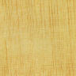 | 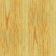 | 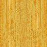 | 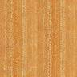 |
| 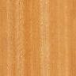 | 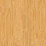 | 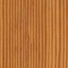 | 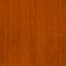 |
| 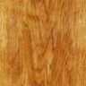 | 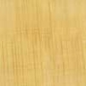 | 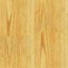 | 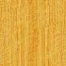 | 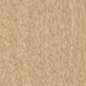 | 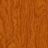 | 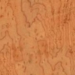 | 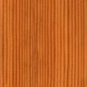 |
These images have been resized, rotated and converted to fit the required format. Download the texture collection (67Kb)
These images come from the following sites offering free image resources:
- www.grsites.com (woodnnn.jpg)
- www.the3dstudio.com (wood_inn.jpg)
Tiling small images can give some undesirable effects. For this reason, zinger proposes texture images big enough to cover completely the board.
| 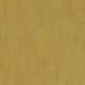 | 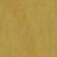 | 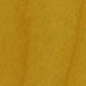 | 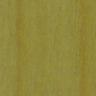 |
Download the full size images (746Kb)
Another very nice collection offered by Jorge Salas.
| 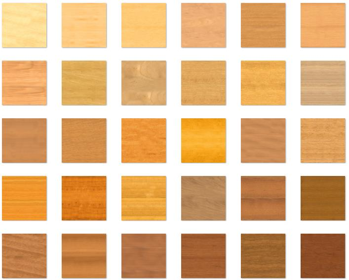 |
Download the full size images (1.33 Mb)
Another way to try avoiding artifacts when tiling is to use a bigger image made from the original image by applying mirror and flip symmetries. For instance, if the texture image is then default tiling and tiling with symmetries give respectively the following figures:
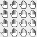 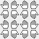
When applied to one of the previous texture, default tiling and tiling with symmetries lead to:
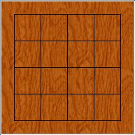 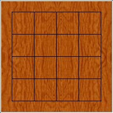
Tiling with symmetries has been put at work by Stijn in his PostScript and PDF board repository. Thanks a lot to Harry Fearnley for bringing this to my attention.
Tiling with symmetries is available in Drago as an option in the advanced settings.